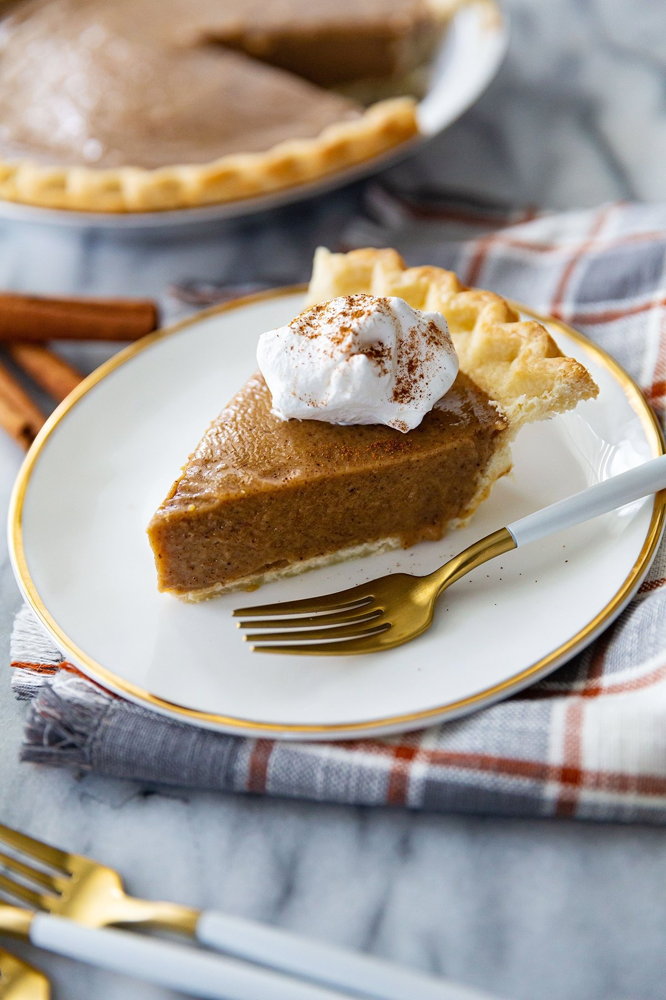

Home
Butterscotch Cinnamon Pie

Description
A delicious pie with a rich butterscotch flavor and a hint of cinnamon.
Ingredients
- 1 pre-made pie crust
- 1 1/4 cups brown sugar
- 2 tablespoons all-purpose flour
- 2 tablespoons cornstarch
- 1/2 teaspoon salt
- 2 teaspoons ground cinnamon
- 2 cups whole milk
- 3 large egg yolks (room temperature)
- 1/4 cup unsalted butter (4 tablespoons)
- 2 teaspoons vanilla extract
Instructions
- Thaw unbaked pie crust and roll onto a 9-inch pie pan. Bake in pie pan according to pie crust instructions, until golden brown. Set aside while preparing the pie filling.
- In a small bowl, lightly beat your egg yolks and set aside.
- In a medium saucepan over medium-high heat, combine brown sugar, flour, cornstarch, salt and cinnamon with the two cups of milk. Whisk together and cook until thickened (it should be a thick consistency so could take up to 10-15 minutes depending on heat level, but this can vary, so be sure it is thick before going to the next step).
- Temper eggs by adding a spoonful of hot mixture to the egg yolks. Gradually whisk in egg yolks to saucepan and stir well.
- Stir in butter and vanilla extract. Cook, whisking regularly, for another 5 minutes. Mixture should thicken up again.
- Pour pie filling into prepared pie pan and allow to cool for at least 30 minutes before refrigerating for at least 2 hours (preferably overnight) until ready to serve.
- When ready to serve, garnish with a dollop of whipped cream and a dash of cinnamon to pie and enjoy!